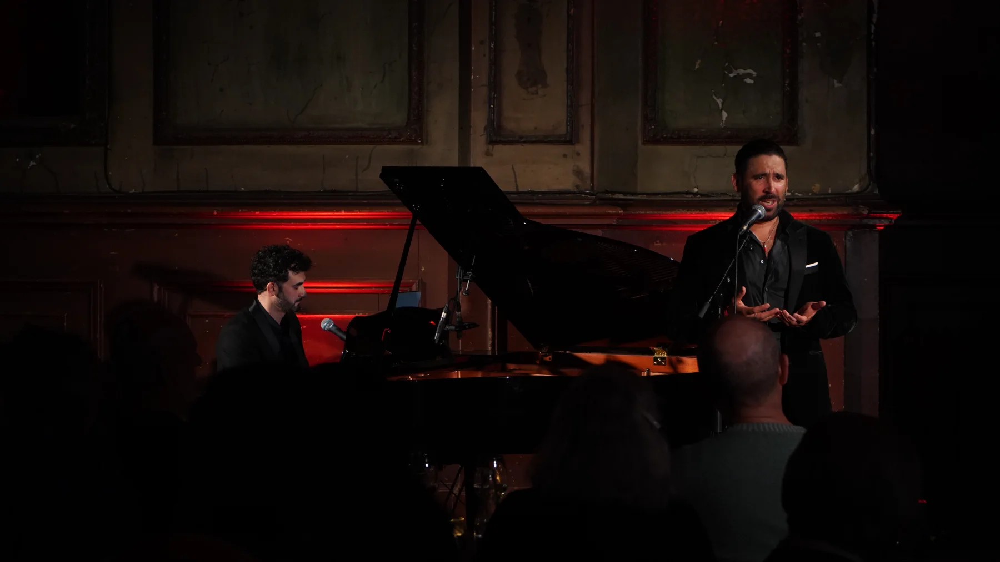
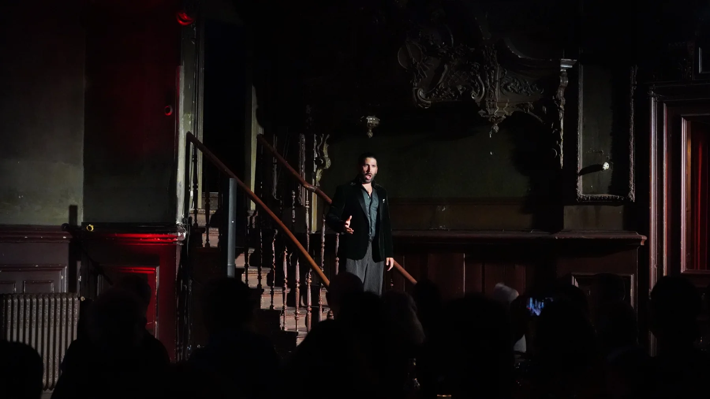
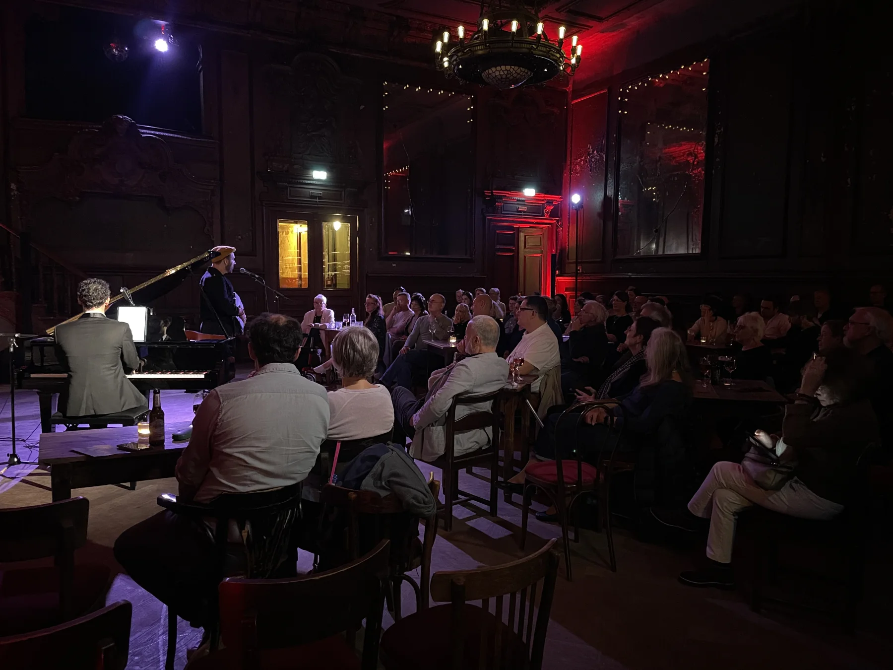

DE Zwei Tenöre, ein Klavier und die Musik zwischen Buenos Aires und Italien. Tango Tenors verbindet argentinischen Tango, italienische und neapolitanische Lieder mit klassischem Gesang, Humor und theatralischer Leidenschaft.
EN Two tenors, one piano, and music between Buenos Aires and Italy. Tango Tenors brings together Argentine tango, Italian and Neapolitan song, classical voices, humour and theatrical passion.
Rolando Guy · tenor
Gastón Efficace · tenor & piano
Buenos Aires · Napoli · Berlin
Tango
Tenors
Two tenor voices. Argentine tango and Italian song. A concert born between Buenos Aires, Naples and Berlin.
SEE THE NEXT CONCERTBuenos Aires · Napoli · Berlin
A night of tango, song and two voices crossing the Atlantic.
NEXT CONCERT
ONE PIANO
TWO TENORS
ALL THE PASSION
WATCH LIVE
LIVE



ABOUT
Tango Tenors brings together Argentine tango, Italian song and two male voices, two Tenors, in a concert format born between Buenos Aires, Naples and Berlin.
From Buenos Aires through Naples to Berlin, tango, Italian melodies and the present meet in one shared musical journey.
Rolando Guy · tenor
Gastón Efficace · tenor & piano
ON STAGE


NEXT CONCERT
18 OCTOBER 2026
19:00
HAUS DER SINNE
YSTADER STRASSE 10
10437 BERLIN
Abendkasse: 15 € / ermäßigt 12 €
VVK zzgl. Gebühren
CLOSING



Live photography: Sonia Dipi
CONTACT